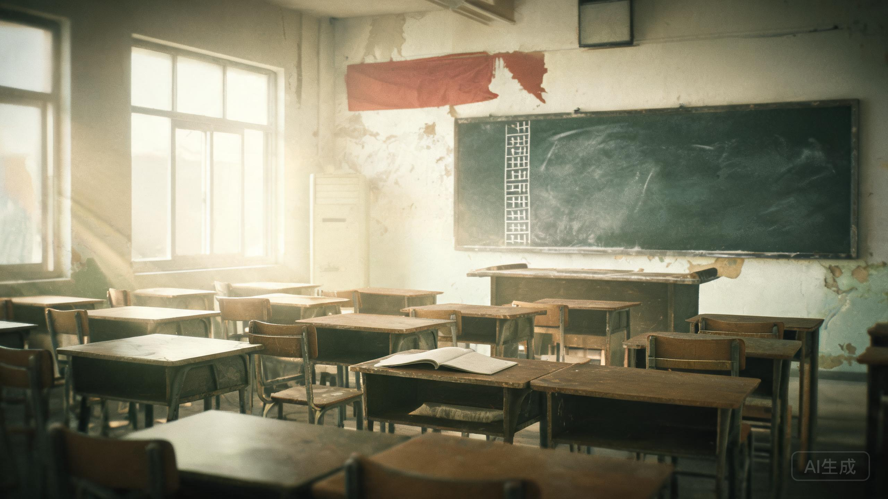

2026年8月17日，傍晚。旧教学楼三天后拆除。
黑板还在，粉笔槽里有一截断掉的粉笔。

黑板上的粉笔字不是你的。是很多年前，某个坐在这里的人留下的。字迹很重，粉笔压得很深，像写的时候手在抖。
第一行是父亲的姓名和工号：1998.10.07 陈卫东 04071。第二行是冷库的坐标：第三排 第三层 铁盒。第三行只有一句话：22:00 门是从外面锁的。
最后一行最大：别拆这间教室。
你回头看窗外。走廊里站着一个人，背对着你。你眨了一下眼，那里只剩一件叠好的蓝色工装，搭在栏杆上。
工装左胸口袋上，别着一枚厂徽。编号 04071。
第三排第二张课桌，桌角刻着“陈默 1998”。刻痕旁边，又有人用更钝的刀尖补了一行：“爸来找过你。”
课桌肚子里有一张折成四折的纸。纸上是母亲的字：“小默，如果有一天你找到名单，别恨他。他只是想让我多活几年。”
纸的背面画着三个碗。第三个碗被涂黑了。
黑板右下角有一行很小的粉笔字，要侧着光才看得见：“答案不在黑板上。答案在你带回来的纸里。”
旧教学楼 8月20日拆除。拆除公司的人说，三楼的黑板他们不打算砸，会整块拆下来，送进档案馆。
“这间教室的黑板，我们擦不掉。”工人说，“粉笔字像从墙里长出来的。”
提示：结案需要三组编号（工号、门禁、名单人数）和三个判断。全部 13 份材料归档，并且打开铁盒之后，才能抵达真正的结案。